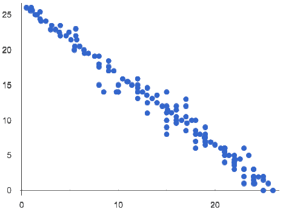
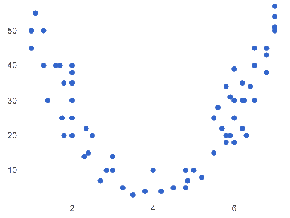
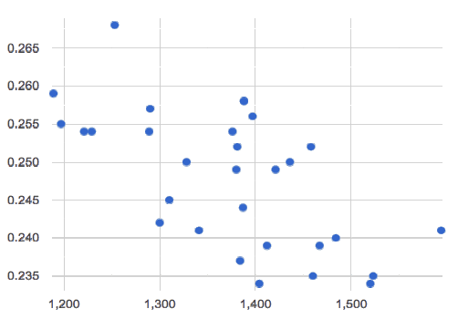

Correlations
Students deepen their understanding of scatter plots, learning to describe and interpret direction and strength of linear relationships.
|
Lesson Goals |
Students will be able to…
|
|
Student-facing Lesson Goals |
|
|
Materials |
|
|
Preparation |
|
|
Supplemental Resources |
correlation-
a single number somewhere between -1 and +1 that reports the direction and strength of the linear relationship between two quantitative variables (also known as the r-value)
direction-
the relationship between two quantitative variables: either they increase/decrease together or one may increase while the other decreases
form-
the shape of a relationship between two quantitative variables: whether the two variables together vary linearly or in some other way
linear regression-
a type of analysis that models the relationship between two quantitative variables. The result is known as a regression line, or line of best fit.
linear relationship-
sequences that change at a constant rate, or points forming a straight line on a graph
r-
a number between −1 and 1 that measures the direction and strength of a linear relationship between two quantitative variables (also known as correlation value)
strength-
of a relationship between two quantitative variables: how much the value of one variable tells us about the value of the other
| 5 minutes |
Overview
Students identify and make use of patterns in scatter plots, learning to characterize them as being linear, curved, or showing no clear pattern. Determining that a form is linear is a prerequisite for proceeding to correlation and linear regression.
Launch
Students have learned several ways to analyze a single quantitative variable, such as age or pounds of the animals in our dataset:
-
reporting the center
-
computing on the spread
-
describing the shape of the distribution
Together, those numbers tell us what value is typical, how much the values vary, and what kind of values are usual or unusual.
But those analyses tell us nothing about the relationship between animals' ages and weights. In order to understand such relationships, we have to expand our view from one column to two. This goes hand-in-hand with expanding our display from a 1-dimensional histogram or box plot to a 2-dimensional scatter plot.
Rather than summarizing each distribution in one dimension, we can search for a linear relationship between two quantitative variables. But linear relationships only make sense if the scatter plot follows a straight-line pattern. So the first thing we need to ask is whether the form of the relationship as being linear or not.
Form indicates whether a relationship is linear, non-linear or undefined.
Investigate
Some patterns are linear, and cluster around a straight line sloping up or down.

{kind=link}
 🖼Show imageSome patterns are non-linear, and may look like a curve or an arc.
🖼Show imageSome patterns are non-linear, and may look like a curve or an arc.
{kind=link}

{kind=link}
Turn to Identifying Form, Direction and Strength, and complete just the first question for each scatter plot, identifying whether the relationship is linear, non-linear or if there’s no relationship at all.
Synthesize
-
Which scatter plots seem to have linear relationships?
-
A, C, D, and F seem to have linear relationships.
-
-
Which scatter plots seem to have non-linear relationships?
-
Scatter plot E seems to have a non-linaer relationship.
-
-
Which scatter plots seem to have no relationships?
-
Scatter plot B seems to have no relationship.
-
Data Scientists use their eyes all the time! It doesn’t make sense to search for correlations when there’s no pattern at all, and summarizing with a correlation only makes sense for linear relationships!
Going Deeper In an AP Statistics class or full-year Data Science class, it’s appropriate to discuss non-linear relationships here. In a dedicated computer science class, it may also be appropriate to talk about transforming the x- or y-axis (using |
| 10 minutes |
Overview
Once students have learned to identify a possible linear relationship, they can turn their attention to other qualities of that relationship, like its direction.
Launch
We can also examine the direction of a linear relationship.
 🖼Show imagePositive: the line slopes up as we look from left-to-right. Positive relationships are by far most common because of natural tendencies for variables to increase in tandem. For example, “the older the animal, the more it tends to weigh”. This is usually true for human animals, too!
🖼Show imagePositive: the line slopes up as we look from left-to-right. Positive relationships are by far most common because of natural tendencies for variables to increase in tandem. For example, “the older the animal, the more it tends to weigh”. This is usually true for human animals, too!
{kind=link}
 🖼Show imageNegative: the line slopes down as we look from left-to-right. Negative relationships can also occur. For example, “the older a child gets, the fewer new words he or she learns each day.”
🖼Show imageNegative: the line slopes down as we look from left-to-right. Negative relationships can also occur. For example, “the older a child gets, the fewer new words he or she learns each day.”
{kind=link}
Investigate
-
Complete Identifying Form, Direction and Strength and focus just on the second question, determining whether each of the relationships you previously identified as linear is positive or negative.
Synthesize
It only makes sense to look for direction in linear relationships!
Confirm that students have correctly identified the direction of each linear relationship.
| 10 minutes |
Overview
We’ll explore another quality of a possible linear relationship: its strength.
Launch
Strength indicates how closely the two variables are correlated.
How well does knowing the x-value allow us to predict what the y-value will be?
🖼Show imageA relationship is strong if knowing the x-value of a data point gives us a very good idea of what its y-value will be (knowing a student’s age gives us a very good idea of what grade they’re in). A strong linear relationship means that the points in the scatter plot are all clustered tightly around an invisible line.

{kind=link}
Investigate
-
Complete Identifying Form, Direction and Strength, and focus on the third question for each scatter plot, identifying whether the relationship is strong or weak.
-
Optional: Complete the card sort on Identifying Strength (Desmos).
Common Misconceptions
-
Students often conflate strength and direction, thinking that a strong correlation must be positive and a weak one must be negative.
-
Students may also falsely believe that there is ALWAYS a correlation between any two variables in their dataset.
-
Students often believe that strength and sample size are interchangeable, leading to mistaken assumptions like "any correlation found in a million data points must be strong!"
Synthesize
-
Be ready to discuss your answers with the class!
This page includes a series of probing questions that get at the common misconceptions listed above. Discuss the answers as a class.
If time permits, you might also want to have them complete Identifying Form, Direction and Strength (Matching).
| Summarizing Correlations using r-values | 20 minutes |
Overview
Now that students know how to identify direction and strength for linear relationships, they’ll learn to read how these are expressed in the r-value.
Launch
Students have learned that a correlation can be described by three pieces of information: Form, Direction, and Strength. Statisticians and Data Scientists have a shorter way of describing all three, called r-value.
r is positive or negative depending on whether the correlation is positive or negative. The strength of a correlation is the distance from zero: an r-value of zero means there is no correlation at all, and stronger correlations will be closer to −1 or 1.
An r-value of about ±0.65 or ±0.70 or more is typically considered a strong correlation, and anything between ±0.35 and ±0.65 is “moderately correlated”. Anything less than about ±0.25 or ±0.35 may be considered weak. However, these cutoffs are not an exact science! In some contexts an r-value of ±0.50 might be considered impressively strong!
If it works for you, give students five minutes to play a few rounds of the online game Guess the Correlation to develop intuition with r-values. (This will require creating an account.)
Investigate
-
Complete Identifying Form and r-Values. For each scatter plot, identify whether the relationship is linear, and, if it is, use r to summarize direction and strength.
-
Be prepared to discuss your answers with the class!
Calculating r from a dataset only tells us the direction and strength of the relationship in that particular sample. If the correlation between adoption time and age for a representative sample of about 30 shelter animals turns out to be +0.44, the correlation for the larger population of animals will probably be close to that, but certainly not the same.
Correlation does NOT imply causation.
It’s easy to be seduced by large r-values, and believe that we’re really onto something that will help us claim that one variable really impacts another! But Data Scientists know better than that…
If time allows, you may want to emphasize the point that correlation does not imply causation by having students look at the nonsense claims that could be made from the graphs of real world data on the Spurious Correlations website.
-
Let’s look for correlations in the Animals Dataset!
-
Open your saved Animals Starter File, or make a new copy.
-
Complete Correlations in the Animals Dataset.
Synthesize
Which corresponded more strongly with time to adoption, "age" or "pounds"? What does this mean?
The correlation with "pounds" is higher, meaning that an animal’s weight is a better predictor of the number of weeks an animal will live at the shelter before being adopted than its age.
-
People often confuse correlation with causation. What are some examples of this?
-
Why is a problem for society, that people confuse the two?
| Your Analysis | flexible |
Overview
Students repeat the previous activity, this time applying it to their own dataset and interpreting their own results.
Note: this activity can be done as a homework assignment, but we recommend giving students an additional class period to work on this.
Launch
What correlations do you think there are in your dataset? Would you like to investigate a grouped sample (subset) of your data to find those correlations?
Investigate
-
Brainstorm a few possible correlations that you might expect to find in your dataset, and make some scatter plots to investigate.
-
Turn to Correlations in My Dataset, and list three correlations you’d like to search for.
-
Investigate these correlations. If you need blank Design Recipes, you can find them at the back of your workbook, just before the Contracts.
Synthesize
-
What correlations did you find?
-
Did you search within any grouped samples? Was the correlation different between groups, or different from the whole population?
-
What can you infer from these correlations?
These materials were developed partly through support of the National Science Foundation,
(awards 1042210, 1535276, 1648684, and 1738598).  Bootstrap by the Bootstrap Community is licensed under a Creative Commons 4.0 Unported License. This license does not grant permission to run training or professional development. Offering training or professional development with materials substantially derived from Bootstrap must be approved in writing by a Bootstrap Director. Permissions beyond the scope of this license, such as to run training, may be available by contacting contact@BootstrapWorld.org.
Bootstrap by the Bootstrap Community is licensed under a Creative Commons 4.0 Unported License. This license does not grant permission to run training or professional development. Offering training or professional development with materials substantially derived from Bootstrap must be approved in writing by a Bootstrap Director. Permissions beyond the scope of this license, such as to run training, may be available by contacting contact@BootstrapWorld.org.